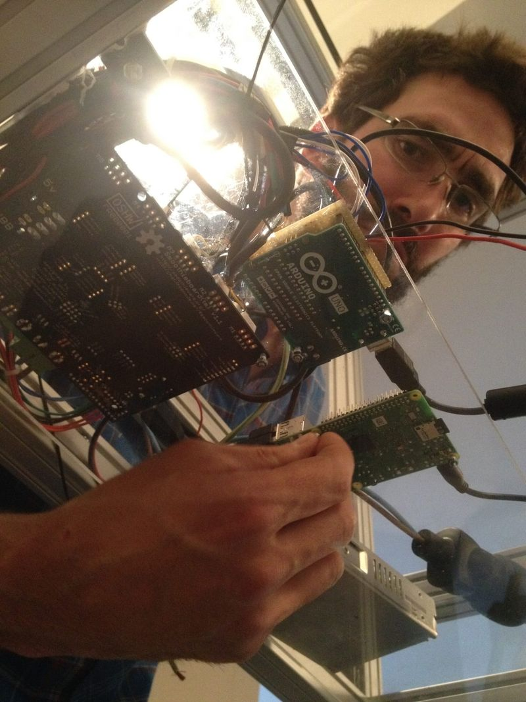
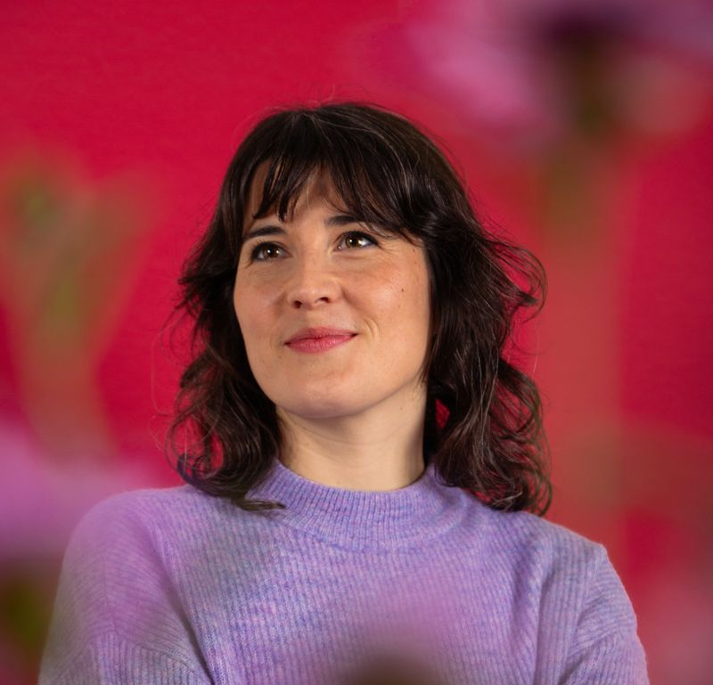

Théoriz Studio
Studio de création
Théoriz est un studio créatif concevant des expériences poétiques et non conventionnelles avec des technologies de pointe. Membre fondateur de LABLAB, il co-gère le lieu et son studio immersif.
Voir le siteRencontrez-nous
LABLAB réunit des artistes, ingénieur·e·s et petites entreprises indépendantes au Pôle PIXEL, à Lyon. Chacun·e travaille sous son propre nom et peut être sollicité·e directement, ou avec d’autres LABLABers pour des projets plus ambitieux, y compris dans notre studio immersif.
Studio de création
Théoriz est un studio créatif concevant des expériences poétiques et non conventionnelles avec des technologies de pointe. Membre fondateur de LABLAB, il co-gère le lieu et son studio immersif.
Voir le site
Association
Née à Lyon en 2004, l’AADN porte un projet artistique, culturel et politique qui s’incarne dans les rencontres entre arts, sciences et technologies. Actrice de la société civile et entrepreneur culturel, elle se situe dans le champ des innovations sociales, technologiques et artistiques, et propose des programmes de résidence et des ateliers pour les artistes numériques. L’AADN est membre fondateur de LABLAB.
Voir le siteTechnologie de tracking
Augmenta est une solution de tracking plug-and-play conçue pour intégrer facilement de l’interactivité dans divers espaces : parcs d’attractions, musées, environnements urbains ou scènes de spectacle. Son matériel et ses logiciels se connectent à tous les serveurs médias et logiciels créatifs.
Voir le site
Production audiovisuelle
French Film Production accompagne entreprises et institutions dans la production de films sous toutes leurs formes. Elle intervient dans la publicité et le cinéma, documentaire compris.
Voir le site
Compagnie de danse
Corps Au Bord est une compagnie de danse et d’art numérique qui travaille la relation corps-paysage et corps-technologie. Elle développe des créations chorégraphiques en réalité augmentée et des performances scéniques qui placent le corps à la racine du possible dialogue humain-machine.
Voir le site
Le Hoop
Nicolas Guichard, électromécanicien et bidouilleur numérique, développe et conçoit au sein de l’atelier du Hoop des dispositifs pour le spectacle vivant, l’événementiel et l’art contemporain.
Voir le site
Arts & sciences
Alex Andrix est un artiste numérique et contemporain pour la Science. Il génère des peintures abstraites, des visualisations de données scientifiques, des illustrations, des films et des expériences VR.
Voir le site
Culture · Data · Citoyenneté
Ingénieure indépendante depuis plus de 10 ans et experte en conception participative pour la culture et l’éducation, Julie Borgeot fédère des équipes pour analyser et visualiser les données culturelles, favoriser l’implication des habitant·e·s dans les projets et politiques culturelles, et produire des dispositifs de médiation scientifique, culturelle ou citoyenne.
Voir le site
Artiste & inventeur
Danaël Valbert est un artiste qui pratique la lutherie créative et le travail du bois. Il est le créateur de l’instrument Kebab et a composé des symphonies pour Kebab.
Voir le site